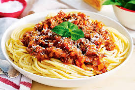

Spaghetti Bolognese

Ingredients
- 200g of spaghetti
- 1 onion
- 2 cloves of garlic
- 1 can of tomato
- seasoning cubes
- curry powder
- thyme
- vegetable oil
- fresh pepper
- green pepper
- carrots
- fresh basil or parsley
- ground beef
- salt
- water
- grated cheese
Cooking Steps
- Step 1: Boil the spaghetti
pour water into a pot, add a little slt and bring it to a boil.
Add the spaghetti and cook for about 8-10 minutes
Drain the water and set the spaghetti aside.
- Step 2: Prepare the sauce
Heat a little vegetable oil in a pan.
Add chopped onions and garlic. stir-fry untill soft and fragrant.
- Step 3: Cook the meat
Add your minced beef to the pan.
Stir and cook until it turns brown and fully cooked
- Step 4: Add tomato and seasoning
Add blended or canned tomatoes to the meat.
Stir in curry, thyme, salt, seasoning cubes, and pepper.
Let it simmer on low heat for about 10-15 minutes until it thickens.
- Step 5: Combine and Serve
Pour the cooked spaghetti into the sauce and mix well. or serve the sauce on top of the spaghetti.
Garnish with grated cheese or fresh herbs if you like.